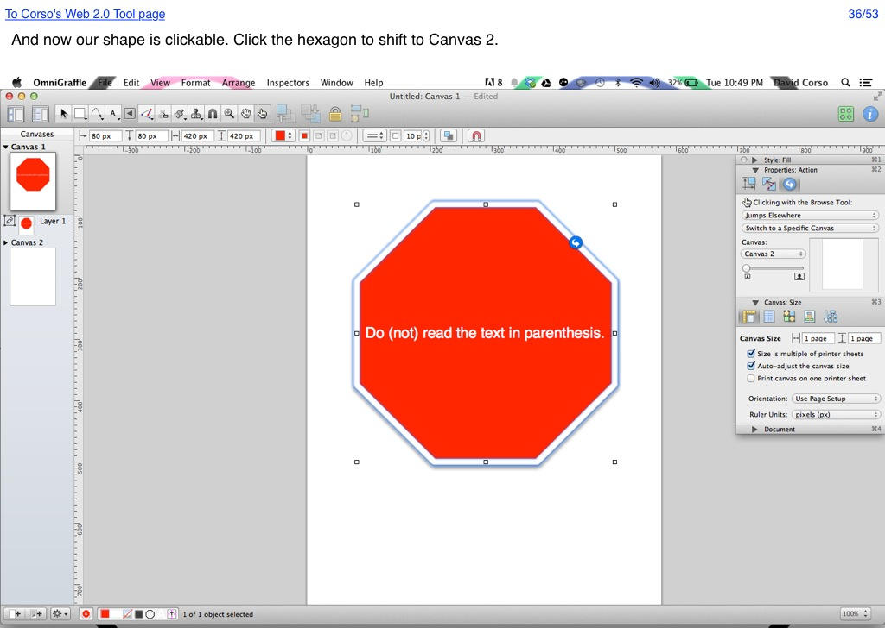

<map name="GraffleExport">
	<area shape=rect coords="5,7,194,24" href="http://66.147.244.111/~immunisg/ET703/CorsoGraphics/Web2.0Tool/WebTool.html">
	<area shape=rect coords="978,7,1017,24" href="53.html">
	<area shape=poly coords="502,238,622,238,712,327,712,445,622,535,502,535,412,445,412,327,502,238" href="37.html">
</map>

